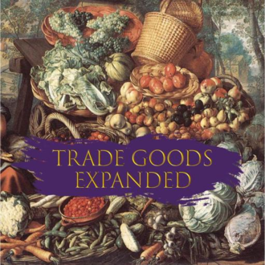

游戏模组：贸易品拓展
| 贸易品拓展 | |
|---|---|
 | |
| LOGO | |
| 类型 | 平衡, 拓展, 游戏性, 地图, 贸易 |
| 作者 | MrMarcinQ |
| 版本 | 1.30 |
| 论坛/贴吧 | |
| STEAM创意工坊 | 1770950522 |
描述
贸易品拓展是一种为欧陆风云IV增加了大量新商品的模组。该模组包含超过47种新贸易品和建筑，原版仅包含英语与德语两种语言。
资源

{kind=link}
{kind=link}
{kind=link}
{kind=link}
贸易品列表
| 贸易品 | 类型 | 工场 | 贸易奖励 | 每个省份奖励 | ||
|---|---|---|---|---|---|---|
 |
啤酒 | 食物/饮品 | 2.5 | |||
 |
养蜂 | 食物/饮品 | 2.5 | |||
 |
捕鲸 | 动物 | 3 | |||
 |
木材 | 海军补给 | 2 | |||
 |
棕榈油 | 种植园 | 2.75 | |||
 |
肉桂 | 香料 | 3.5 | |||
 |
藏红花 | 香料 | 4.25 | |||
 |
稻米 | 食物/饮品 | 2 | |||
 |
鸦片 | 杂项 | 4 | |||
 |
朗姆酒 | 食物/饮品 | 3 | |||
 |
马匹 | 动物 | 3.25 | |||
 |
橄榄油 | 食物/饮品 | 3 | |||
 |
琥珀 | 杂项 | 3.5 | |||
 |
玉石 | 杂项 | 4 | |||
 |
大理石 | 杂项 | 3 | |||
 |
铅 | 矿石/金属 | 3.5 | |||
 |
丁香 | 香料 | 3.5 | |||
 |
水银 | 矿石/金属 | 3 | |||
 |
骆驼 | 动物 | 2.5 | |||
 |
火药 | 杂项 | 3.5 | |||
 |
大象 | 动物 | 3 | |||
 |
锡 | 矿石/金属 | 3 | |||
 |
椰枣 | 食物/饮品 | 2.5 | |||
 |
奶酪 | 食物/饮品 | 2.75 | |||
 |
柑橘 | 食物/饮品 | 3.25 | |||
 |
海鲜 | 食物/饮品 | 2.75 | |||
 |
地毯 | 纺织品 | 3 | |||
 |
玉米 | 食物/饮品 | 2.5 | |||
 |
珍珠 | 杂项 | 4 | |||
 |
异域动物 | 动物 | 4 | |||
 |
香草 | 香料 | 3.5 | |||
 |
黑檀 | 杂项 | 3.5 | |||
 |
焦油 | 海军补给 | 2.75 | |||
 |
硫磺 | 矿石/金属 | 3.25 | |||
 |
枫糖浆 | 食物/饮品 | 3.5 | |||
 |
马铃薯 | 食物/饮品 | 2.5 | |||
 |
锌 | 矿石/金属 | 3 |
制成品清单
| 贸易品 | 工场 | 建筑要求 | 贸易奖励 | 每个省份奖励 | ||
|---|---|---|---|---|---|---|
 |
青铜 | 3.5 |
|
|||
 |
黄铜 | 3.5 | ||||
 |
金属加工 | 3.5 |
|
生产建筑: |
邻近省份: | |
 |
军需品 | 4 | ||||
 |
皮革加工坊 | 3.5 |
|
|||
 |
木工业 | 3.5 | ||||
 |
首饰 | 5 |
|
|||
 |
加农炮 | 4.25 | ||||
 |
蒸汽机 | 5 | ||||
 |
光学仪器 | 4 |
|
特殊贸易品
{kind=link}
{kind=link}
 银
银
银是一种特殊的贸易品，其作用与黄金完全相同，唯一的区别就是与金币的汇率。其价格是每单位商品每年 28金币。
28金币。